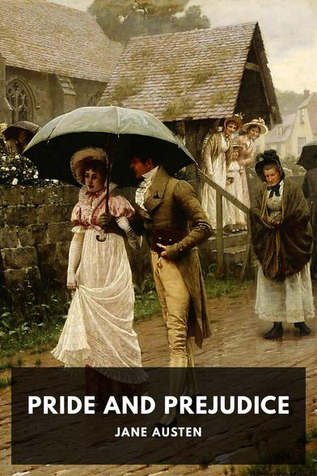

Pride and Prejudice
Pride and Prejudice is an 1813 romantic novel of manners written by Jane Austen. The novel follows the character development of Elizabeth Bennet, the dynamic protagonist of the book, who learns about the repercussions of hasty judgments and eventually comes to appreciate the difference between superficial goodness and actual goodness. A classic piece filled with comedy, its humor lies in its honest depiction of manners, education, marriage and money during the Regency era in Great Britain.
Pride and Prejudice is an 1813 romantic novel of manners written by Jane Austen. The novel follows the character development of Elizabeth Bennet, the dynamic protagonist of the book, who learns about the repercussions of hasty judgments and eventually comes to appreciate the difference between superficial goodness and actual goodness. A classic piece filled with comedy, its humor lies in its honest depiction of manners, education, marriage and money during the Regency era in Great Britain.